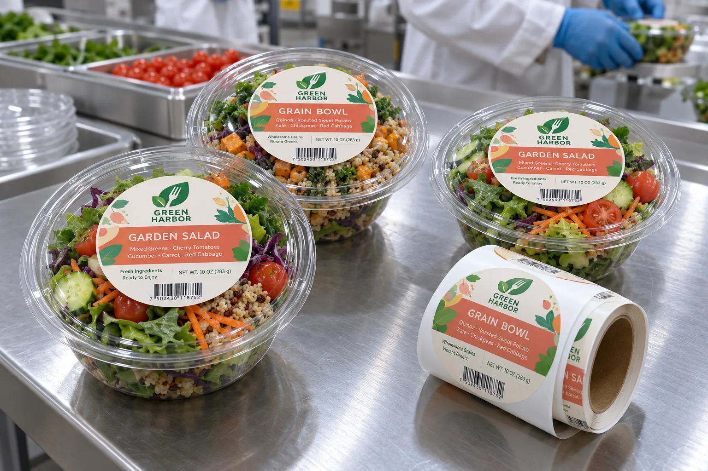

Start with the closed bowl, not the top-view mockup
From above, a round salad label is easy to center. On the real packed bowl, the domed lid may leave a much smaller stable area. I would place a sample on the closed lid, press around the label edge and then open the bowl. If the sticker touches the snap rim or pull tab, the artwork is in the wrong place even if the photo looks balanced.
HERMA's food-to-go label guidance describes different tray and lid materials, daily variable printing, and separate product and closure functions. A lid-center label identifies the product; it should not be described as tamper evidence unless the finished construction actually bridges and signals opening.
Two menu changes that matter on the line
Consider a composite kitchen running a garden salad and a grain bowl in the same container. It can share a die size while changing color, product name and ingredient imagery. I would keep the name high contrast over an opaque patch. Lettuce and grain colors vary too much to serve as a dependable background for fine type.
Consider a composite meal-prep supplier changing its menu every week. The brand face can be preprinted while the packed-on information is added later. In that case, the location and coating of the code field matter as much as the front artwork. A scanner should find the barcode without rotating an unstable dome or reading through the food.
Test the label in the chilled route
Record whether the lid is clean and dry when labeled, how long it stays in refrigeration, and whether finished bowls are stacked. A film face may help with moisture after application, but it cannot make an untested adhesive bond to surface water. The label should remain attached and readable without obscuring the food or the opening edge.
| On the finished bowl | Pass condition to define |
|---|---|
| View area | Food remains easy to inspect |
| Lid rim | Snap and pull tab remain clear |
| Product name | Readable against every recipe |
| Code field | Print stays legible after chilling |
| Barcode | Scans on the packed bowl |
Our buying view
A centered label should earn its space
I would use the smallest label that carries the required product identity and still scans. The salad is already doing the visual selling through the lid; printing more opaque area is not automatically better branding.
Send a bowl, not just its capacity
- Closed, filled bowls for each lid supplier and container size.
- Usable flat lid diameter and snap-rim clearance.
- Menu matrix, variable fields, barcode and code method.
- Application surface condition and chilled distribution route.
For a different functional label, read deli-tub bridge labels. For cold handling, see refrigerated food label materials.
Frequently asked questions
Should the label span the lid and bowl?
Only if it is intentionally designed and validated as a closure label. A centered product label on the lid does not provide that function.
Can a clear label show more salad?
It can, but small text and barcodes may need an opaque backing area to remain legible against changing ingredients.
Where should a packed-on date go?
Reserve a flat, accessible print field sized for the actual coding method and keep it linked to the correct recipe and pack.
Related buyer guides
Review your label specification
Send package photos, label dimensions, material details, quantity and application conditions. Include good and failed samples where possible so the discussion starts with evidence.